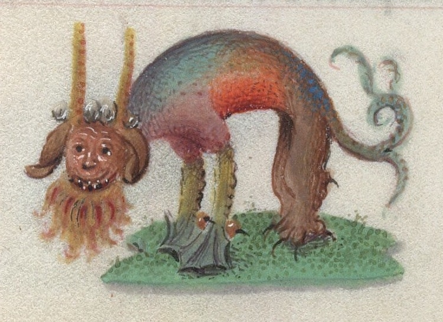

Vi har:
For accessibilitytesting benyttet vi oss av WAVE
Vi har brukt PC og smarttelefon med forskjellige skjermstørrelser for å teste funksjonaliteten.
Accessibilitytest: error i navigasjonsbaren som viser til en "empty form label". Vi ser ikke på dette som en error, men en
metode som ble brukt for å lage en hamburgermeny med kun HTML og CSS. Testen mener at alt-teksten til logo som er satt til "logo" er mistenkelig.
Dette har vi valgt å se bort ifra. Testen mener også at det er overflødig å linke til hjem i logo når man linker til hjem i hjem-knappen.
Dette er også noe vi har valgt å se bort fra.
Headeren en illustrasjon av våre lokaler slik at brukere kan få et innblikk i hvordan det ser ut hos oss. Headeren har vi jobbet med slik
at den ikke skal forstyrre teksten for mye. Dette gjorde vi ved å legge et filter på header som gjør bildet noe mørkere.
Accessibilitytest: testen mener det er lav kontrast på hovedteksten over bildet og knappen. Vi har som nevnt med intensjon gjort
bakgrunnen mørk og teksten og knappen hvit.
Når det kommer til menyen snakket vi først og fremst om at det bør være en meny som skal se innbydende ut,
i tillegg til at det skal være god informasjon om maten som tilbys. I dette legger vi: hva matretten består av i tillegg til
allergener for retten. For å gjøre det enda mer informativt og-/eller fristende valgte vi også å gå for illustrative bilder.
Når det kommer til allergener valgte vi å både bruke tekst og ikoner som skal illustrere hva slags allergener det er i retten; enkelt
å få øye på!
Accessibilitytest: ingen alerts knyttet til denne siden, men navigasjonsbar.
Bookingsiden inneholder informasjon om The Next Event. Vi fokuserte på at det skulle være lett å forstå hva vi tilbyr og hvor vi
er lokalisert. Dette gjorde vi blant annet ved å sette inn et interaktivt kart fra Google Maps og ha viktig info i fet tekst.
I tillegg har vi med et skjema som er lett oversiktlig og å navigere i.
Accessibilitytest: ingen varsler knyttet til siden, men navigasjonsbar.
For kontaktskjemaet har vi prøvd å gjøre det så enkelt som mulig for brukere å komme i kontakt med oss. I dette legger vi:
Accessibilitytest: ingen varsler knyttet til siden, men navigasjonsbar.
